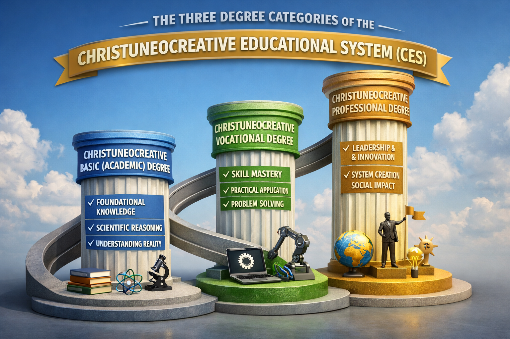

Christuneocreative Educational System (CES)

Within the University of Christuneocreatology (UNIC), the Christuneocreative Educational System (CES) operates through a Learning by Doing model that emphasizes transformation through active participation, creative engagement, and practical responsibility.
The CES integrates Solution-Based Education (SBE), Competency-Based Education (CBE), Outcome-Based Education (OBE), Performance-Based Education (PBE), Project-Based Education (PjBE), and Experiential Education (EE) into one unified educational framework.
Unlike conventional education that emphasizes examinations and theoretical knowledge, CES focuses on innovation, practical competence, measurable outcomes, and solving real-world problems.
Education within CES is evaluated through demonstrated competence, innovation, ethical responsibility, practical performance, and meaningful contributions to society.
Its ultimate mission is to develop Christuneocreators—individuals equipped with knowledge, creativity, scientific reasoning, technological capability, leadership, and moral character.
Develops literacy, communication, foundational knowledge, logical reasoning, and responsible understanding.
Focuses on practical skills, projects, applied learning, problem solving, and real-world competence.
Emphasizes innovation, research, leadership, invention, entrepreneurship, and transformational impact.
The Learning by Doing model ensures that education progresses from literacy to competence and finally to innovation. Through CES, the University of Christuneocreatology prepares individuals to demonstrate knowledge through action, leadership through service, and creativity through disciplined alignment for the advancement of a Christuneocreative Civilization.